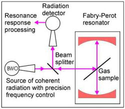

Instruments Resonator spectrometer Resonator spectrometer
Resonator spectrometer for studies of atmospheric lines and continuum (Device
018 )
|
The width of resonance response is in direct proportion to the radiation absorption by a gas sample. Fast (60
µs/step,
0.2
µs switching time) digital frequency scanning without phase jumps while switching is used for recording resonance
response. Shape of the resonance is treated by analogy with a narrow molecular absorption line.
- Achieved frequency range of absorption measurements 37-500 GHz
- Achieved accuracy of resonance width measurements 20 Hz
- Absorption variation sensitivity 4·10-9cm-1
- Achieved range of temperatures:
- stabilized within 220 - 370 K
- non-stabilized within 10 - 220 K
- Achieved range of gas pressures: 0 – 1000 Torr
|  |
Principle of absorption measurements
Detailed description of the spectrometer
Accuracy of measurements
Atmospheric continuum measurements
Water dimer detection
Examples of the spectrometer
use for "in situ" observation of atmospheric lines.
For more details and the spectrometer applications see [Ref.
11 (2000), Ref.
4 (2009), Ref.
1,2 (2013)].
|